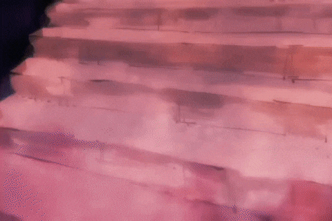
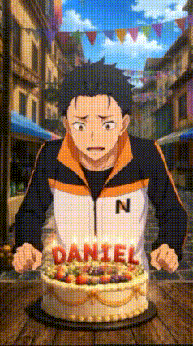
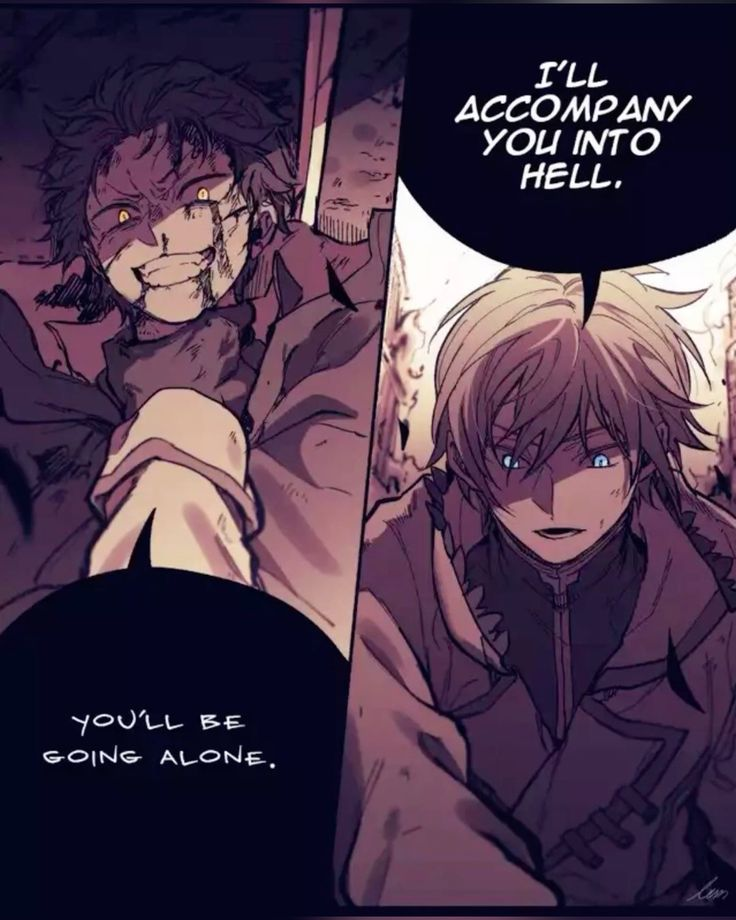
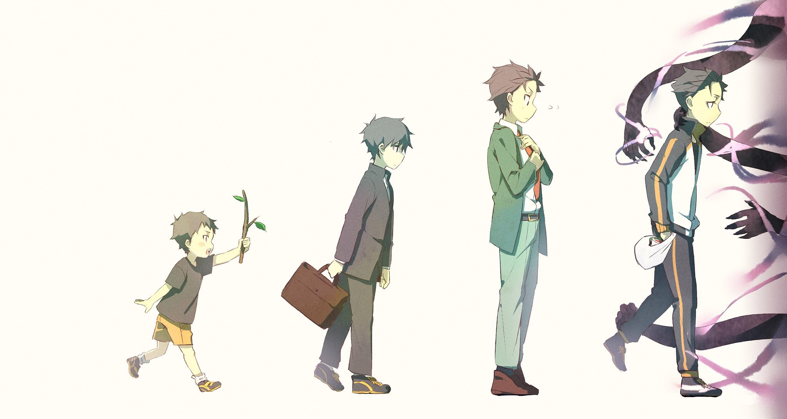

Climbing Stairs

Daniel has climbed countless stairs throughout his life, each step representing a feat of perseverance and strength. From the stairs of his home to the stairs of various buildings, Daniel's dedication to climbing is unwavering.
Celebrating Birthdays

Daniel has celebrated many IF Routess throughout his long and eventful life, each one serving as another reminder that against all odds he has somehow survived for yet another year. Friends, allies, rivals, and random bystanders alike gather to witness the annual event.
These celebrations are not merely occasions for cake and gifts, but opportunities to reflect upon Daniel's many accomplishments. From farming and losing aura in legendary encounters, every year adds another collection of stories to his ever-growing legacy. It is said that the older Daniel becomes, the more powerful his ability to create completely avoidable situations grows. As a result, each birthday is viewed as a warning to the Kingdom that another year of Daniel's adventures is about to begin.
Rather than dwelling on past failures, he chooses to celebrate the experiences that shaped him into the man he is today. Whether he is challenging opponents far stronger than himself or simply climbing stairs with unmatched dedication, Daniel continues to move forward. Every birthday serves as proof that his story is still being written, and that even greater feats and catastrophes await the Aura Monster.
Remembering Random Guys

Daniel Natsuki, an amazing guy, has also achieved flow state and he has, in a very unfortunate way, found out that he has the ability to remember those who's names were eaten by one of the Gluttonies. In many fanfictions, his name was also eaten and he was thought to be the Sin Archbishop of Pride, which by itself says a lot about his persona.
He remembers Wholius Whokulius and the Coma Girl.
Sword Saint - Reinhard Van Astrea VS Sin Archbishop of Pride - Natsuki Subaru

Daniel Subaru also possesses the remarkable achievement of having his aura completely farmed while fighting against Reinhard, an event that many historians consider to be one of the greatest robberies in the history of Lugunica. This unfortunate outcome only came to pass because Reinhard made the catastrophic mistake of interfering in matters that clearly did not concern him. After all, Elsa was obviously Daniel's designated prey, rival, future nemesis, and, according to at least one IF route, even his wife. By stepping in and defeating her, Reinhard effectively stole Daniel's entire character arc before it even had the chance to begin. Daniel was preparing to engage in a completely fair and balanced battle that definitely would not have ended with him being immediately disassembled by the Bowel Hunter.
Reinhard's intervention deprived the world of this historic encounter and, in doing so, unknowingly sealed the fate of the entire Kingdom. He stole Daniel's kill and the consequences were immeasurable. All because Reinhard could not resist showing up and solving problems. It is therefore widely accepted among leading experts in Daniel Subaru studies that the Kingdom was doomed anyway, not because of any Witch Cult activity, political instability, or external threat, but because Reinhard chose to interfere with Daniel's destiny.
In that moment, Daniel lost his prey, lost his potential wife, lost his aura, and lost the opportunity to become the greatest hero the Kingdom never deserved, while Reinhard gained yet another victory that absolutely nobody asked for.
The Evolution

His greatest feat is arguably his evolution into Aura Monster during the events of the anime.
He is the son of Naomi and Kenichi Natsuki and ever since he was a child he has always been doing mischief and villanous acts that rivaled the Virtue Archbishob of Charity Regulus Corneas himself, just like his father before him. Many people thought such levels of menace could not be inherited genetically, but he proved them wrong every single day through hard work and dedication.
During his younger years he dedicated himself to the noble arts of being annoying, getting into situations he should not have been in, and generally making everybody around him question why they continued to associate with him. Then in middle school he went to school crossdressing, like one of them queers.
His evolution reached its conclusion when he arrived in the Kingdom of Lugunica. There, after many adventures, mishaps, and probably several incidents that could have been avoided, he gradually learned how to form relationships with other people, without crossdressing.
Also he climbs stairs
Thus stands the tale of Aura Monster: troublemaker, menace to society, relationship haver, stairs climber, and perhaps the greatest evolutionary success story ever witnessed.